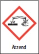
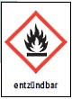
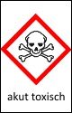

Was Sie bei der Lagerung von Gefahrstoffen beachten müssen,
hängt von Art und Menge der Baustoffe ab.
- Diese Produkte sind in separaten Räumen oder mit einem
ausreichend großen Sicherheitsabstand (etwa eine
Euro-Palette) getrennt von anderen Stoffen zu lagern.
- In der Nähe sollte ein Wasseranschluss vorhanden
sein, damit die Möglichkeit besteht, verätzte
Körperpartien mit Wasser abzuspülen.
|

|
Farben und Lackverdünner, organische Lösemittel
(z.B. Testbenzin), Diesel- und Vergaserkraftstoff
oder andere brennbare Flüssigkeiten
|

|
- Brennbare Flüssigkeiten dürfen Sie
beispielsweise nicht in Durchgängen
und Durchfahrten, in Treppenräumen,
Fluren oder Arbeitsräumen
lagern.
- pBeispiel 1: Benzin oder testbenzinhaltige
Flüssigkeiten sind oft extrem oder leicht
entzündbare Flüssigkeiten. Sie dürfen diese
Produkte
- in unzerbrechlichen Gefäßen bis maximal
10 Liter Fassungsvermögen pro Behälter
- in zerbrechlichen Gefäßen bis maximal
2,5 Liter Fassungsvermögen pro Behälter
bis zu 20 kg außerhalb von Lagerräumen
aufbewahren.
- pBeispiel 2: Mineralölhaltige Schalöle, Dieselkraft
stoffe oder andere Produkte, die als entzündbar
eingestuft sind, können Sie unter bestimmten
Voraussetzungen bis zu 100 kg außerhalb von
Lagerräumen aufbewahren.
Ansonsten müssen Sie be sondere technische
Maßnahmen einleiten und die Lagerung den
staatlichen Überwachungsbehörden anzeigen.
|
Härter von Epoxidharzsystemen, chromathaltige Holzschutzmittel und Reiniger sowie andere fluoridhaltige Reiniger
|

|
- Diese Produkte müssen Sie immer
unter Verschluss lagern.
- pDen Zugang dürfen Sie nur nur fachkundigen
und zuverlässigen Personen ermöglichen.
- Zusammenlagerungs-Verbot bei
über 200 kg.
- pDie Produkte dürfen Sie auch nicht
zusammen mit brennbarem Material
wie Kartonagen oder Tapeten in einem
Lagerraum abstellen.
|